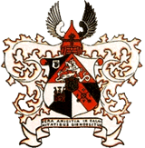
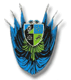

Citas korporâcijas
Pie Lettgallias komânus ir garantçjuðas divas korporâcijas:

|
|

|
Fraternitas Metropolitana
Krâsas: zelts, violçts, zaïð
Devîzes: Vienotiem spçkiem par godu, draugu, tçvzemi
|
|
Ruthenia
Krâsas: melns, oranþs, balts
Devîzes: Vera amicitia in calamitatibus dignoscitur
|
Lettgalliai pastâv draudzîbas karteïa lîgums ar igauòu korporâciju Rotalia:

|
Rotalia
Krâsas: zils, melns, zaïð
Devîzes: Ausus, kindlus, iseteadvus, uhistunne - goda prâts, noteiktîba, paðapziòa, kopîba.
|
|
|
VÇL PAR STUD. KORPORÂCIJÂM:
|
|